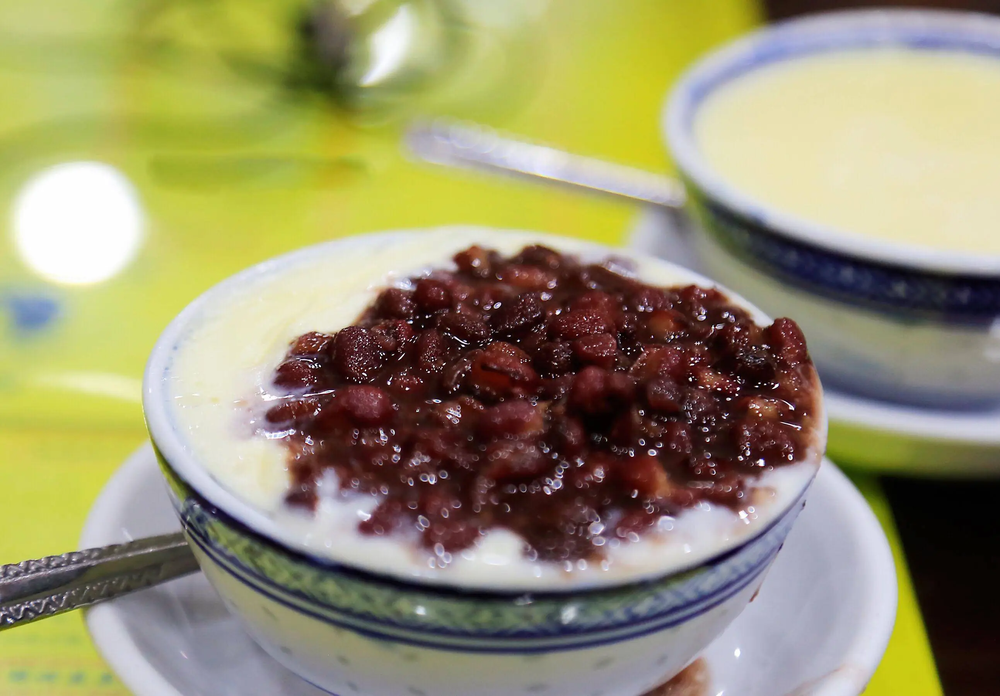
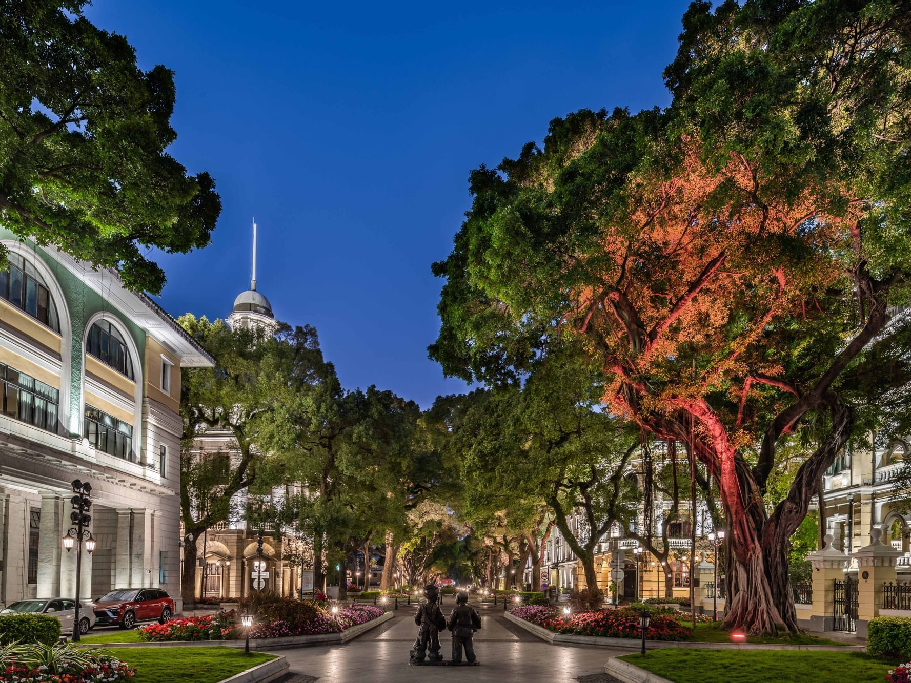

Guangzhou, the “City of Flowers” and heart of Cantonese culture, is a city that wraps you in warmth—from its year-round greenery to the steam rising from a dim sum basket. A trip here isn’t just about checking spots off a list; it’s about slow mornings at teahouses, wandering ancient halls, and breathing in fresh mountain air. Whether you’re a history fan, nature lover, or foodie, Guangzhou has a way of making you feel right at home.

Start your days with nature: Hike Baiyun Mountain at sunrise to catch mist rolling over its peaks, or paddle Liuhua Lake’s calm waters as willows sway in the breeze. For a quieter escape, Haizhu Wetland’s boardwalks let you spot egrets and lotus blooms. Then dive into history—Chen Clan Ancestral Hall’s carvings tell stories of clan traditions, Zhenhai Tower stands tall with 600 years of city history, and Shamian Island’s colonial buildings feel like a step back in time.
And the food? It’s non-negotiable. Savor shrimp dumplings (har gow) at a local teahouse, bite into crispy-skinned roast goose, and end meals with silky double-skin milk. By the end of your trip, you’ll understand why Guangzhou is called the “food capital of southern China.”

Tip 1: Autumn (October–November): Cool (18°C–28°C), dry, and less rainy—ideal for hiking Baiyun Mountain or exploring Shamian Island.
Tip 2: Spring (March–April): Mild (15°C–25°C) with blooming flowers (perfect for Liuhua Lake Park), but occasional light rain.
Tip 3: Avoid summer (June–August): Hot (30°C–35°C) and humid with heavy rain; winter (December–February) is cool (10°C–20°C) but quiet.
Tip 1: Getting to Guangzhou:
Fly to Guangzhou Baiyun International Airport (CAN)—take Metro Line 3 (45 mins, 9 CNY) or a taxi (1 hour, ~150 CNY) to downtown. High-speed trains from Shenzhen (30 mins, ~70 CNY) or Hong Kong (1.5 hours, ~200 CNY) are super convenient.
Tip 2: Getting Around:
Metro: Lines 1–22 cover all major spots (e.g., Chen Clan Ancestral Hall, Haizhu Wetland); single ride 2–8 CNY.
Buses: Cheap (2 CNY) for reaching parks like Liuhua Lake; use the “Guangzhou Bus” app for routes.
Taxis/Didi: Taxis start at 10 CNY; Didi is better for late-night rides (e.g., from a teahouse to your hotel).
Tip 1: Book dim sum at popular spots (e.g., Tim Ho Wan) 1–2 days in advance—weekends get crowded.
Tip 2: Wear comfortable shoes: You’ll walk a lot at Baiyun Mountain and Shamian Island.
Tip 3: Carry an umbrella: Even in autumn, sudden light rain is common.